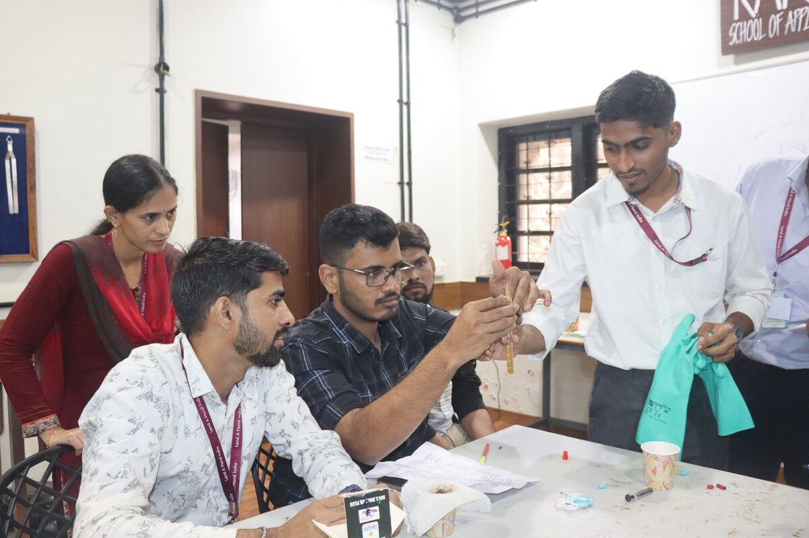
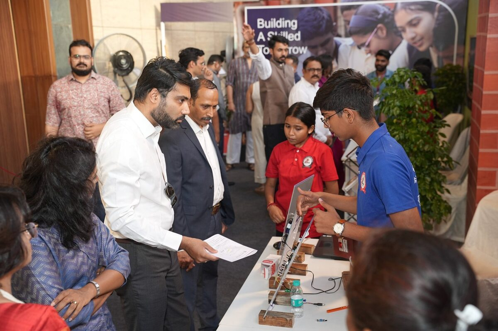

Not bigger budgets, but better decisions
Picture two schools that launch skill education in the same way: similar equipment, trained teachers, a proud first exhibition. Two years on, one has a lab in weekly use. In the other, it is a room shown to visitors.
Programmes usually fade through the same four gaps: an eroding timetable, a lost teacher, missing consumables and no one who owns the programme.
The schools that keep skill education going beyond the first year are not necessarily the ones with the largest budgets or the best-equipped labs. What they tend to share is a set of decisions made early, and then protected, so that the programme does not depend on any one person's enthusiasm.
Here are six of them. Together, they are a practical answer to how to implement skill education in schools so that it lasts.
1. They treat the skill period as part of the timetable, not a favour to it
In these schools, the skill period is placed in the master timetable before other adjustments are made. There is also a clear understanding of what can displace it, such as an examination, and what cannot, such as a rehearsal or a substitution.
The principal's role here is small but decisive: being willing to say no when a request to borrow the period arrives.
2. They build a bench of teachers, not a single champion
A programme that rests on one trained teacher is exposed to transfers, resignations and changes in that teacher's other duties. Schools that sustain skill education usually train more than one teacher per area and give them time to practise facilitating hands-on sessions before taking a class alone.
Teacher training works best when it is followed by this kind of practice and support inside the school. Facilitating practical, project-based work is a different skill from delivering a lecture, and it develops through repetition and feedback rather than a single workshop. The practice should cover how to run a session, not just which activity to run: opening with a question for students to investigate and closing with time to reflect.
This is the thinking behind our teacher training programme for Kaushal Bodh, Kaushal Vikas and other skill modules: the aim is a school whose own teachers can facilitate the work and support their colleagues, without needing us in the room.

3. They budget for the second year, not just the first
Equipment gets approved because it is visible. Consumables, repairs and replacements are easier to overlook, and when they are missing, practical sessions quietly turn into demonstrations.
Sustaining schools carry a recurring line in the annual budget and give someone the job of tracking stock, so a shortage is caught before a lesson, not during one.
4. They give the programme an owner and a place in the academic calendar
Someone is named as coordinator, with time set aside for the role. Skill education is discussed in the same review meetings as other subjects, not only at annual events.
A coordinator who can say what each class has covered, and what students have produced, can solve problems early.
School leaders who want to see what a working programme looks like can visit the Karigar School of Applied Learning, where students and teachers take part in learning programmes. Seeing the practice first-hand can make decisions about timetable and ownership easier to take.
5. They make learning visible
Rather than counting periods held, these schools make what students have learned visible. Students explain their work at a Kaushal Mela or in assemblies, describing how they made something and why, not just displaying it. Teachers point to maths or science concepts that skill projects strengthened. This keeps the focus on learning and gives principals something concrete to share with parents, who may otherwise see skill education as separate from “real” academics.

6. They keep the pathway in view
Skill education in Classes 6–8 and in Classes 9–10 is more than two separate programmes. In Classes 6 to 8, the aim is largely exploration: trying different kinds of practical work, finding out what interests them, and learning how to use tools and materials safely. In Classes 9 and 10, the work can go deeper, with students building competence in a chosen area.
Kaushal Bodh (Classes 6–8) and Kaushal Vikas (Classes 9–10) are designed with this progression in mind. A skill education curriculum works best when it is read as one pathway rather than as separate packages, because the second stage assumes something of the first.
Programmes often lose this thread when students move from Class 8 to Class 9. Teachers change, records of what students have already done are not passed on, and students who were curious in the middle years find themselves starting from scratch. Schools that avoid this gap tend to do a few simple things:
- keep a short record of what each class has covered and made;
- give teachers of different stages a chance to talk to one another at least once a year;
- let Class 9 teachers see samples of work from Class 8 so they know what students can already do.
Where the Composite Skill Lab fits
A Composite Skill Lab gives a school a dedicated space where students can work with tools, materials and equipment across several skill areas. It supports hands-on learning that a standard classroom cannot easily provide, and it gives the programme a visible home within the school.
What the lab cannot do is sustain a programme by itself. A well-equipped lab with an unprotected timetable, an untrained teacher or no consumables budget will, in time, become a room that is shown to visitors and rarely used.
This is why Composite Skill Lab setup should follow decisions about timetable, teachers and budget, not come before them. Before any equipment is chosen, it helps to ask:
- Who will teach in the lab, and how will they be prepared?
- How many periods a week will it be used, and by which classes?
- What will it cost each year to keep running, beyond the first purchase?
We plan and set up Composite Skill Labs in this order: timetable, teachers and budget first, then space and equipment (Refer Composite Skill Lab checklist). For schools that do not yet have a lab, or are still deciding, our mobile skill lab, Skills on Wheels, gives students hands-on experience before the school commits space and budget.
The lab is best understood as one part of a system. It supports the programme, but the programme is made of time, people and routines.Refer : What a composite skill Lab is NOT
When outside support helps, and when it doesn't
Not every school needs an external partner, and no partner can address every implementation challenge on its own. However, the right support can help schools build the capacity to deliver skill education effectively and sustain it over time.
External support is particularly valuable when schools need practical, project-based teacher training with follow-up, a curriculum and learning resources aligned across Classes 6–10, or expertise in planning Composite Skill Labs so that infrastructure, equipment and classroom use work together.
At the same time, successful implementation depends on decisions that remain with the school: protecting time in the timetable, assigning clear responsibility for the programme, and allocating budgets for consumables and maintenance. The partner brings expertise and implementation support; the school creates the conditions for that support to translate into consistent learning experiences for students.
What to do next
None of these practices requires expensive technology. They require decisions, and a person who is responsible for seeing them through.
Want to see how your school measures up? Our next article is a ten-minute playbook with a checklist and a picture of what "ideal" looks like for each decision: Playbook for schools.
If you would like to talk through where your own programme stands.
Previously: Why Most School Skill Programmes Stall in Year Two